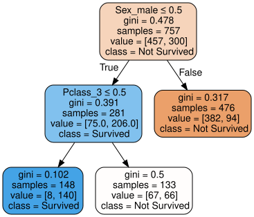
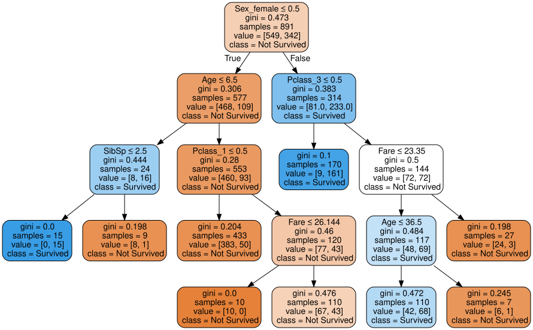
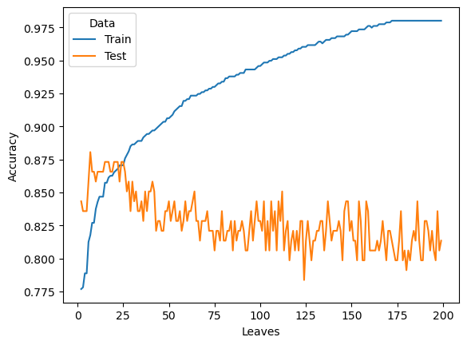
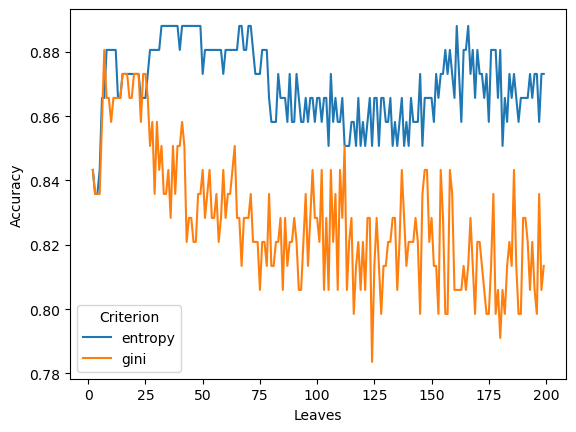

Code
# import some packages
import pandas as pd
import numpy as np
from sklearn import tree
from sklearn import metricsInstallation: You will need to install python and jupyter. The easiest way is to install the package Anaconda as follows.
Download Anaconda from this link
Install Anaconda from the downloaded file
Open Jupyter Lab by
jupyter lab and hit EnterInstall the graphviz package
conda install python-graphvizData: The data should be in the same folder as the notebook.
We will go over the above steps to train decision tree with the titanic dataset. Notice that these codes can be reused for other dataset. The codes for Step 1, 4, 5, 6, and 7 should be the same or at least similar when applied to other data. Only Step 2 and Step 3 will be different from data to data.
# import some packages
import pandas as pd
import numpy as np
from sklearn import tree
from sklearn import metrics# Import the data
df = pd.read_csv('titanic.csv')# Check the variables
df.columnsIndex(['PassengerId', 'Survived', 'Pclass', 'Name', 'Sex', 'Age', 'SibSp',
'Parch', 'Ticket', 'Fare', 'Cabin', 'Embarked'],
dtype='object')# Assign input variables
X = df.loc[:,['Pclass','Sex','Age','Fare','Embarked','SibSp','Parch']]
# Assign target variable
y = df['Survived']X.dtypesPclass int64
Sex object
Age float64
Fare float64
Embarked object
SibSp int64
Parch int64
dtype: object# Change Pclass to categorical variable
X['Pclass'] = X['Pclass'].astype(object)df.isna().sum()PassengerId 0
Survived 0
Pclass 0
Name 0
Sex 0
Age 177
SibSp 0
Parch 0
Ticket 0
Fare 0
Cabin 687
Embarked 2
dtype: int64# Replace missing values by the median
X["Age"] = X["Age"].fillna(X["Age"].median())
# Impute the Embarked variable
X["Embarked"] = X["Embarked"].fillna("S")sklearn does not work directly with categorical variables. It requires the categorical variables to be encoded into numeric variables. There are multiple way to encode categorical variables. Here, we implement the simplest way of encoding: one-hot encoding or dummy encoding.
# Encode categorical variable
X = pd.get_dummies(X)from sklearn.model_selection import train_test_split
x_train,x_test,y_train,y_test=train_test_split(X,y,test_size=0.15)# Create a decision tree and train
from sklearn.tree import DecisionTreeClassifier
tree1 = DecisionTreeClassifier(criterion='gini', max_leaf_nodes=3)
tree1.fit(x_train, y_train)DecisionTreeClassifier(max_leaf_nodes=3)In a Jupyter environment, please rerun this cell to show the HTML representation or trust the notebook.
DecisionTreeClassifier(max_leaf_nodes=3)
# conda install graphvizfrom sklearn import tree
import graphviz
dot_data = tree.export_graphviz(tree1, out_file=None)
dot_data = tree.export_graphviz(tree1, out_file=None,
feature_names=x_train.columns,
class_names=['Not Survived','Survived'],
filled=True, rounded=True,
special_characters=True)
graph = graphviz.Source(dot_data)
graph
ypred_test = tree1.predict(x_test)
from sklearn.metrics import confusion_matrix
mat = confusion_matrix(ypred_test, y_test)
print('===============')
print('Confusion Matrix:')
print(mat)
print('===============')
print('Testing Accuracy:')
print(mat.diagonal().sum()/mat.sum())
print('===============')===============
Confusion Matrix:
[[91 21]
[ 1 21]]
===============
Testing Accuracy:
0.835820895522388
===============# Prediction and accuracy on testing data
print('Testing Accuracy is:')
tree1.score(x_test, y_test)Testing Accuracy is:0.835820895522388How do we know the selection of max_leaf_nodes and criterion in Step 5 is the best selection?
Tuning hyperparameters or Tuning a model is to search for the set of hyperparameters that works the best. To tune a model, one first needs to know what the hyperparameters/tuning parameters that the model has. A model may have several hyperparamters that sometime it is not practical to tune all the hyperparameters.
Our model here is decision tree. To see the list of tuning parameters of decision trees, one can check at the sklearn document of the model. One way to find out is to google: DecisionTreeClassifier and sklearn. This search brings us to this link.
From the link, you can see the list of (hyper)parameters. In this example, we will tune two parameters max_leaf_nodes and criterion.
import warnings
warnings.filterwarnings("ignore")
# Decide what hyperparameter to tune then decide the searching range
param_grid = {'max_leaf_nodes': range(2,10),
'criterion':['gini', 'entropy']}
# Create a list of trees
from sklearn.model_selection import GridSearchCV
tree2 = GridSearchCV(DecisionTreeClassifier(), param_grid, cv = 5)
tree2.fit(x_train, y_train)GridSearchCV(cv=5, estimator=DecisionTreeClassifier(),
param_grid={'criterion': ['gini', 'entropy'],
'max_leaf_nodes': range(2, 10)})In a Jupyter environment, please rerun this cell to show the HTML representation or trust the notebook. GridSearchCV(cv=5, estimator=DecisionTreeClassifier(),
param_grid={'criterion': ['gini', 'entropy'],
'max_leaf_nodes': range(2, 10)})DecisionTreeClassifier(max_leaf_nodes=9)
DecisionTreeClassifier(max_leaf_nodes=9)
In the above code, cv=5 means the cross validation is done with 5 folds. This means that the training data will be partition into 5 pieces and each piece will be used as a validation data while the remaining four pieces will be used as the data to build model.
More informatiom about k-fold cross validation can be seen here
In this example, with 10 different values of max_leaf_nodes (2 to 9), and 2 different values of criterion, there will be 8x2=16 models (trees) will be tested. Each of these 16 models will be run 5 times (since cv=5). Thus, in total, there will be 16x5=80 times a tree is computed. The search for the best parameters could be time consuming!
cv_result = pd.concat([pd.DataFrame(tree2.cv_results_["params"]),pd.DataFrame(tree2.cv_results_["mean_test_score"], columns=["Accuracy"])],axis=1)
cv_result['Rank'] = (-cv_result['Accuracy']).argsort().argsort()
cv_result| criterion | max_leaf_nodes | Accuracy | Rank | |
|---|---|---|---|---|
| 0 | gini | 2 | 0.776751 | 10 |
| 1 | gini | 3 | 0.766208 | 13 |
| 2 | gini | 4 | 0.774094 | 11 |
| 3 | gini | 5 | 0.779374 | 8 |
| 4 | gini | 6 | 0.801873 | 6 |
| 5 | gini | 7 | 0.809803 | 2 |
| 6 | gini | 8 | 0.812435 | 1 |
| 7 | gini | 9 | 0.815075 | 0 |
| 8 | entropy | 2 | 0.776751 | 9 |
| 9 | entropy | 3 | 0.766208 | 14 |
| 10 | entropy | 4 | 0.760910 | 15 |
| 11 | entropy | 5 | 0.772795 | 12 |
| 12 | entropy | 6 | 0.796558 | 7 |
| 13 | entropy | 7 | 0.805830 | 5 |
| 14 | entropy | 8 | 0.807163 | 4 |
| 15 | entropy | 9 | 0.807171 | 3 |
The above shows that the best hyperparameters are criterion=entropy and max_leaf_nodes=7. We can use this information to redo step 5.
tree3 = DecisionTreeClassifier(**tree2.best_params_)
# Train with the selected hyperparameter
tree3.fit(X, y)
print('Best Tree is:', tree2.best_params_)
print('')
import graphviz
dot_data = tree.export_graphviz(tree3, out_file=None)
dot_data = tree.export_graphviz(tree3, out_file=None,
feature_names=x_train.columns,
class_names=['Not Survived','Survived'],
filled=True, rounded=True,
special_characters=True)
graph = graphviz.Source(dot_data)
graphBest Tree is: {'criterion': 'gini', 'max_leaf_nodes': 9}

# Import the test dataset and do some cleaning
df_test = pd.read_csv('titanic_test.csv')
# Assign input variables
X_test = df_test.loc[:,['Pclass','Sex','Age','Fare','Embarked','SibSp','Parch']]
# Replace missing values by the median
X_test["Age"] = X_test["Age"].fillna(X_test["Age"].median())
# Replace missing values by the median
X_test["Fare"] = X_test["Fare"].fillna(X_test["Fare"].median())
# Impute the Embarked variable
X_test["Embarked"] = X_test["Embarked"].fillna("S")
# Change Pclass to categorical variable
X_test['Pclass'] = X_test['Pclass'].astype(object)
# Encode categorical variable
X_test = pd.get_dummies(X_test)
# Make predictions
predictions = tree3.predict(X_test)
# Save the file in the same folder
submission = pd.DataFrame({'PassengerID': df_test['PassengerId'], 'Survived': predictions})
pd.DataFrame(submission).to_csv("titanic_submission.csv", index=False)We analyze the accuracy of Decision Tree when the spliting criterion and the number of leaves (max_leaf_nodes) change. These two parameters are also called hyper-parameters or tuning parameters.
The following plot shows that the training accuracy will increase when the number of leaves (max_leaf_nodes) increase. The testing accuracy increases at the beginning and decreases or isolating in the long run.
The next plot shows that the selection of criterion also impact model performance.
criterion = ['entropy', 'gini']
max_leaf_nodes = range(2, 200)
#erros_plot = function(criterion, )
rs = pd.DataFrame(columns = ['Criterion','Leaves', 'Data','Accuracy'])
for criterion1 in criterion:
for max_leaf_nodes1 in max_leaf_nodes:
tree1 = DecisionTreeClassifier(criterion=criterion1, max_leaf_nodes=max_leaf_nodes1)
tree1.fit(x_train, y_train)
new_row={'Criterion':criterion1,'Leaves':max_leaf_nodes1, 'Data':'Train','Accuracy':tree1.score(x_train, y_train)}
rs = pd.concat([rs, pd.DataFrame([new_row])], ignore_index=True)
new_row={'Criterion':criterion1,'Leaves':max_leaf_nodes1, 'Data':'Test','Accuracy':tree1.score(x_test, y_test)}
rs = pd.concat([rs, pd.DataFrame([new_row])], ignore_index=True)# Plot the training and testing accuracy of the model when criterion = gini
import seaborn as sns
rs_gini = rs[rs['Criterion']=='gini']
sns.lineplot(data=rs_gini, y="Accuracy", x="Leaves", hue='Data', ci=None)
# Compare the impact of the criterion on tetsing accuracy
sns.lineplot(data=rs[rs['Data']=='Test'], y="Accuracy", x="Leaves", hue='Criterion') 
Following the sample codes at this link to do/answer the below.
entropy as the criteria for splitinggini and entropy